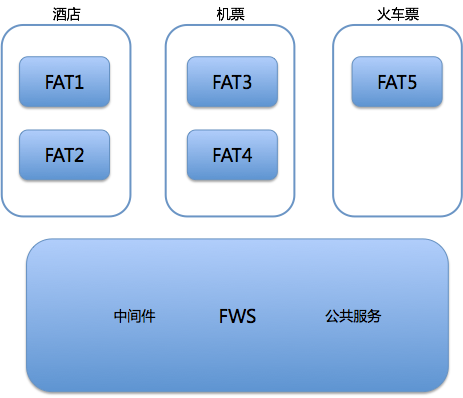
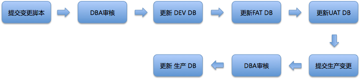
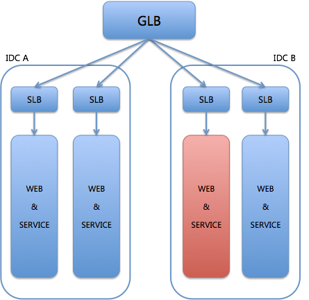
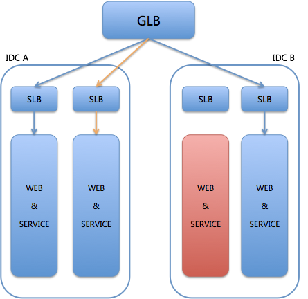
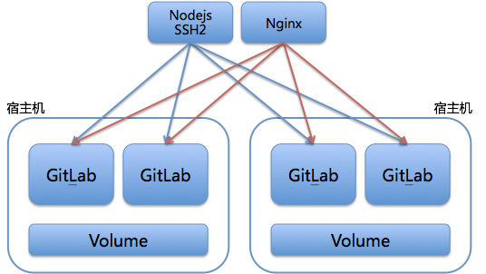

- 00 开篇词 量身定制你的持续交付体系.md
- 01 持续交付到底有什么价值？.md
- 02 影响持续交付的因素有哪些？.md
- 03 持续交付和DevOps是一对好基友.md
- 04 一切的源头，代码分支策略的选择.md
- 05 手把手教你依赖管理.md
- 06 代码回滚，你真的理解吗？.md
- 07 “两个披萨”团队的代码管理实际案例.md
- 08 测试环境要多少？从现实需求说起.md
- 09 测试环境要多少？从成本与效率说起.md
- 10 让环境自己说话，论环境自描述的重要性.md
- 11 “配置”是把双刃剑，带你了解各种配置方法.md
- 12 极限挑战，如何做到分钟级搭建环境？.md
- 13 容器技术真的是环境管理的救星吗？.md
- 14 如何做到构建的提速，再提速！.md
- 15 构建检测，无规矩不成方圆.md
- 16 构建资源的弹性伸缩.md
- 17 容器镜像构建的那些事儿.md
- 18 如何做好容器镜像的个性化及合规检查？.md
- 19 发布是持续交付的最后一公里.md
- 20 Immutable！任何变更都需要发布.md
- 21 发布系统一定要注意用户体验.md
- 22 发布系统的核心架构和功能设计.md
- 23 业务及系统架构对发布的影响.md
- 24 如何利用监控保障发布质量？.md
- 25 代码静态检查实践.md
- 26 越来越重要的破坏性测试.md
- 27 利用Mock与回放技术助力自动化回归.md
- 28 持续交付为什么要平台化设计？.md
- 29 计算资源也是交付的内容.md
- 30 持续交付中有哪些宝贵数据？.md
- 31 了解移动App的持续交付生命周期.md
- 32 细谈移动APP的交付流水线（pipeline）.md
- 33 进阶，如何进一步提升移动APP的交付效率？.md
- 34 快速构建持续交付系统（一）：需求分析.md
- 35 快速构建持续交付系统（二）：GitLab 解决代码管理问题.md
- 36 快速构建持续交付系统（三）：Jenkins 解决集成打包问题.md
- 37 快速构建持续交付系统（四）：Ansible 解决自动部署问题.md
- 持续交付专栏特别放送 答疑解惑.md
- 持续交付专栏特别放送 高效学习指南.md
- 结束语 越痛苦的事，越要经常做.md
持续交付专栏特别放送 答疑解惑
整个专栏的全部37篇文章，已经更新完毕了。在这三个多月的时间里，我一直在尽自己的最大努力，想要把自己过往的一些经验和遇到的问题分享给你。但是，毕竟篇幅、时间有限，针对一些比较复杂的案例，或者是针对不同层次的读者，也很难做到面面俱到。
所以，借着专栏即将结束的机会，我整理了一下大家的留言，总结了一些比较典型的问题，并从中挑选了5个问题在这篇文章中给与回答。虽然，这些问题我依旧不能做到面面俱到，但也想再为你略尽绵薄之力。
因此，今天我就针对下面这五个问题，再详细的展开一下，和你分享一些携程在这些方面的真实方案和实践：
测试环境使用和管理的实例；
怎么处理数据库发布和回滚；
Immutable，在携程是如何落地的；
携程的破坏性测试，DR演练；
携程GitLab HA方案。
测试环境使用和管理的实例
在第8篇《测试环境要多少？从现实需求说起》和第9篇《测试环境要多少？从成本与效率说起》文章中，我和你分享了携程的测试环境包括这么三类：
FAT环境，为每个团队或功能准备的独立功能测试环境；
FWS环境，部署稳定版本的功能服务，以供其他团队联调的环境；
UAT环境，用户接受测试的环境，包括独立部署的DB、缓存和中间件。
这三类环境中，UAT环境的使用和管理方法大家都已经比较熟悉了，所以这里我再着重和你分享一下FAT和FWS环境相关的内容。
FAT和FWS环境的关系，如图1所示。

图1FAT和FWS环境的关系
FAT与FWS环境的关系
FAT环境属于不同部门，可以包括多套环境。在管理时既可以按需临时生成，也可以作为常备环境持久保留。我们可以在一套FAT环境中，部署任意个服务应用。
而FWS环境主要部署的是中间件和公共服务，通常情况下它的版本与生产版本一致。
FWS和FAT这两类环境，在网络上完全相同，并共用一组数据库和缓存。
如何控制服务调用关系？
既然FWS和FAT这两类环境完全相同，而且不同的FAT环境中也会存在相同的服务应用，那么我们就必然要解决一个问题，即：如何控制服务的调用关系。
因为即使是相同的服务应用，部署在不同的FAT环境中的应用版本号也可能不一样。如果按照标准服务治理方式的话，那么就需要把所有FAT环境中的同一个服务认为是一个服务集群。而同一应用的不同版本同时服务的话，它们提供的功能也不一样，这会对测试产生负面影响。因为，你无法确定出现Bug的版本到底是哪一个。
那么，携程是如何解决这个问题的呢？
携程的解决方案是，由SOA通信中间件指定服务的具体地址，即通过配置指定要调用的服务的具体地址。当然，如果每个服务都要去指定配置，那么就太过繁琐了。所以，我们还定义了一条默认规则：
如果没有特别指定的服务调用地址，则优先调用同一个环境中的相关服务。如果同一个环境中该服务不存在，则尝试调用FWS中部署的实例。
在携程如何创建测试环境？
在携程，我们有一套完整的测试环境自助管理平台，开发人员或QA团队可以按需自助完成对对测试环境的任意操作。这里，我也分享一下，在携程创建一个测试环境的大致步骤。
第一步，选择一个已经存在的FAT环境，或者重新创建一个FAT环境。如果是重新创建的话，可以选择重新创建一个空的环境，或者是复制一个已有的环境。
第二步，选择要在这个FAT环境下部署的服务应用，先进行关系绑定（即，这个FAT环境下要部署的所有服务应用的描述）再部署。如果该服务属于其他团队，则可以要求该团队协助部署（由平台来处理）。
在携程，一个团队只能部署属于自己的服务应用，如果你的FAT环境中包含了其他团队的应用，则要由其他团队部署。这样做的好处是各司其职，能更好地控制联调版本。
第三步，配置这个FAT环境相关的信息。携程的配置中心，同样也支持多测试环境的功能，可以做到同一个配置key在不同环境有不同的value。
第四步，对于特殊的服务调用，进行单独配置。
经过这样的四步，一个测试环境就被创建起来了。期间测试环境的任何变化，都可以通过环境管理平台完成。比如，增减服务应用、修改配置，或是扩容/缩容服务器等。
如何处理数据库发布和回滚？
这也是一个大家比较关心的问题。我来和你分享一下携程的实践吧。
在携程，数据库的变更是和应用发布拆分开的。也就是说，我们的数据库有单独的持续交付流程。这个持续交付的过程大致如图2所示。

图2 数据库持续交付
在这个过程中，有两处DBA审核：
- 第一处审核，是在提交脚本之后。审核的内容主要是变更内容是否合法、方式是否得当、是否影响业务等等。
- 第二处审核，是在提交生产变更后。审核的主要的内容是，判断变更是否会对当时的生产系统产生影响。比如，订单表的更新、大表的变化等，就不允许在业务高峰期进行。
整个数据库发布的持续交付流程，是以测试通过为驱动的。这个过程，要经历开发、功能，以及集成测试3个环境。而数据库的发布又与代码发布不同步，所以如果有兼容问题的话，就容易被发现了。
那么，怎么做到兼容呢？携程对数据库变更的要求是：
- 第一，与业务相关的，只能新增字段，不能删除字段，也不能修改已有字段的定义，并且新增字段必须有默认值。
- 第二，对于必须要修改原有数据库结构的场景，则必须由DBA操作，不纳入持续交付流程。
所以，按照这个管理方式处理数据库的持续交付的话，数据库本身基本就没有需要回滚的场景了。
Immutable，在携程是如何落地的？
在第20篇文章《Immutable！任何变更都需要发布》中，我提到了“不可变”的概念和价值，也讲到了任何系统的变更都要视为一次发布。然而，在传统的基于虚拟机的系统架构下，要做到这一点代价非常大。
所以，携程基于Docker容器和k8s落地了不可变模型。
具体的实现思路，其实也很简单。在落地不可变模型之前，我们只有应用发布，这一个可追溯的版本树；那么，针对不可变的需求，我们在其上增加了一个系统变更版本树。同样地，原来只在代码交付时才会进行镜像和部署；现在在系统变更时，我们也会针对性地生成镜像、标注版本、进行部署。
将应用发布和系统变更这两条版本树合并，就是完整的不可变模型需要的版本树了，也就是落地了不可变模型。
携程的破坏性测试：DR演练
其实，携程的破坏性测试也只是刚刚起步，还没有完全具备混沌工程的能力，其原因主要是：很多的老旧系统比较脆弱，不具备在所有的随机破坏后快速恢复的能力。
但是，携程在同城多机房DR（灾难恢复）方面，做得还是比较出色的。其实，DR也是一种破坏性测试，一般采用的方式是局部断电或者流量切换。所以，我们也会定时做DR演练，以检验系统健壮性是否达标。
其实，破坏性测试和DR演练这两种方式的最终结果是一样的，都是将所有生产流量从灾难机房迁移至其他正常机房。当然，要完成这样的切换，同时不影响正常业务，我们需要在架构层面多花费一些精力。比如，数据库的同步、Redis的同步、SLB路由的快速切换，等等。
我们一起看一下DR演练的具体过程吧。假设IDC B的某个服务单元出现了异常，如图3所示。

图3 个别服务单元故障
而此时，IDC A有这个服务单元的灾备存在，那么系统就会被触发流量切换，即：GLB会将所有发给故障服务单元SLB上的流量，切换到IDC A的灾备服务单元上，如图4所示。

图4 流量切换后
这样，故障的服务单元就暂停了服务，直接由灾备服务顶上了。
当然，这种演练不仅仅是整个服务单元异常这一种场景，还可用于单元内的个别服务的异常演练，这时的流量切换就不再是由GLB这种上层来做了，而是利用SLB这一层的能力，切换部分服务的流量到灾备服务上。
最后，你还要记住的很重要的一点就是，要能探测到故障单元是否恢复正常了。如果恢复正常了的话，流量还要还原回去。这部分的能力，可以利用SLB的健康检测实现。
其实，整个破坏性测试过程中最容易出现问题的是，数据库和缓存的处理。如果没有跨机房数据实时同步的能力，建议最好不要尝试，毕竟不要把演练变成了破坏。
携程的GitLab HA方案
携程的GitLab HA方案，主要是基于Sharding思想，大致的架构设计如图5所示。

图5 携程GitLab HA方案
这个方案的核心思想是：通过Nodejsssh2代理和分发所有SSH请求，利用Nginx代理和分发所有http请求。具体的实施，包括以下三点：
第一，每台宿主机上有多个GitLab实例，可以是虚拟机形式，当然也可以是容器形式。
第二，同台宿主机上的GitLab实例共享一个Volume，这样就保证了即使某一个GitLab实例故障，也可以快速将流量切换到同宿主机的其他实例上，继续提供服务。
第三，我们对每台宿主机的仓库，简单地用rsync做了冷备。此处并没做互备，否则就变成NFS方案了（因为，我们的目的是，只要保证存储故障时可恢复，所以无需采用NFS方案）。
这个方案的开发成本和维护成本都比较小、简单实用，你也可以借鉴。
© 2019 - 2023 Liangliang Lee. Powered by gin and hexo-theme-book.